Experience the Yokai World 100 Stories of Yokai Exhibition
958.68 Square Metres, Zero Nails, One Chance to Pass Inspection
To mark the 100th birthday of Mizuki Shigeru, creator of GeGeGe no Kitaro and Japan's foremost yokai scholar, Mizuki Production chose Taiwan as the first stop for this centennial exhibition.
The venue sat inside a building under strict heritage-conservation regulations, so from day one the engineering team wasn't asking how to build, it was asking how to build somewhere nobody was allowed to touch.
The goal was a fully immersive dark-exhibit environment across 958.68 square metres, built under a zero-penetration constraint and a brutally compressed schedule, to "100% international-grade design fidelity": high-density FRP composite sculptural sets, multi-zone automated trigger mechanisms, and a fully integrated audio-lighting-electrical system for a dark-field environment, all expected to pass on-site inspection by Mizuki Production's own supervisory team in a single round.
The Weight Had to Carry Itself
Drilling or any invasive damage to the venue's walls and foundation was off the table entirely, a hard rule of heritage preservation with zero room to negotiate. We used a self-supporting steel-and-timber frame combined with a modular raised floor system, transferring the multi-ton load of the sets and utilities onto an entirely independent load-bearing structure, so the heritage building never bore a single point of structural contact from start to finish.
Dark exhibits demand narrow, maze-like circulation, so all structural and surface materials were fire-retardant grade board and fabric, with emergency evacuation signage and concealed fire-safety equipment integrated directly into the set design. Code compliance and visual integrity both had to hold at once.
Sensors Nobody Sees, a Jolt Everybody Feels
The exhibit hall conceals a substantial number of dynamic surprise mechanisms. Infrared (PIR) sensors, microwave sensors, and high-sensitivity pressure pads all have their sensing points buried deep inside the walls and set pieces, so visitors never see a sensor, only feel the jolt the instant they walk past one.
The moment a visitor steps into a preset zone, a microcontroller (MCU) triggers pneumatic or electric mechanisms in real time, paired with low-latency strobe lighting and directional multichannel audio, for a millisecond-scale impact.
With tens of thousands of trigger cycles a day throughout the run, every mechanical component was fitted with industrial-grade shock absorption and high-wear parts, built to be triggered every day for the entire run without failing.
Darkness Was Solved Before Anything Else Could Be
The original venue had its own existing light-pollution issues. We started at the highest point of the building and worked down, blacking out every wall and blocking any leak of outside light to get the absolute darkness a dark exhibit needs; nothing downstream, from zone-based light control to sensor precision, works without that step first.
High- and low-voltage wiring, pneumatic lines, and controllers were all routed through maintenance corridors built inside the set pieces, with concealed access points reserved so on-site maintenance never compromises the visual completeness.
With multiple immersive themed spaces sitting right next to each other, sound and light bleed easily between zones, so we contained each theme zone's audio and lighting inside its own boundary using low-colour-temperature directional spotlighting, mirrored optical reflection, and zone-based sound-pressure control.
Building Through a Pandemic
Construction happened to run right through COVID-19 restrictions. Health management for on-site personnel and total headcount control on the venue all had to follow government pandemic regulations, labor capacity was limited, and the schedule was compressed to something close to unreasonable. We adopted 24-hour phased construction, separating the mobilization windows for carpentry, mechanism automation, low-voltage systems, and set-finish spraying by trade, so people were never over-concentrated in the same space at the same time. Within a timeline squeezed this tightly, neither construction progress nor quality control gave.
Passed the First Time
Mizuki Production holds extremely high standards for IP fidelity, yokai character proportions, exact paint colour codes, and overall atmosphere, and sent its own team of Japanese specialists to Taiwan to supervise and inspect the venue in person. Backed by precise drawing-translation capability and mature aging-and-weathering paint craftsmanship, we made millimetre-level adjustments on site in real time, following the Japanese team's direction, and passed the licensor's high-standard inspection in a single round, with no resubmissions and nothing redone.
What Was Left Standing
Across the entire run, the automated triggers, lighting, and acoustic systems maintained zero failures, and Mizuki Production's own on-site supervisory review also passed on the first attempt. The result covers a cross-border IP-licensed exhibition, construction inside a heritage site, mechanical-and-electrical automation, and dark-exhibit engineering, all in one project, in a building nobody was allowed to touch.
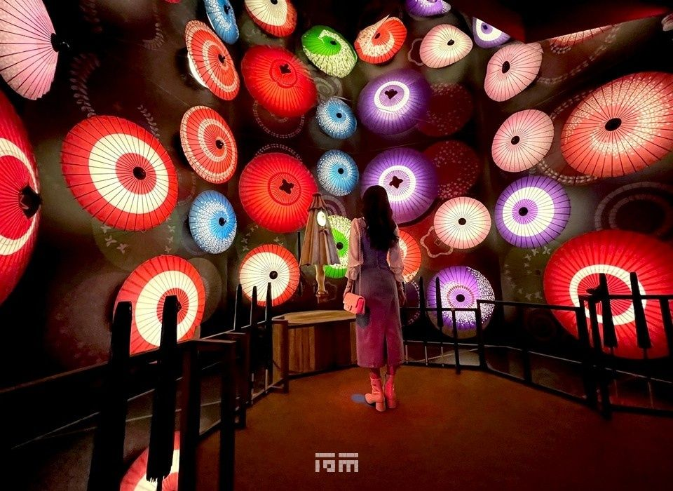
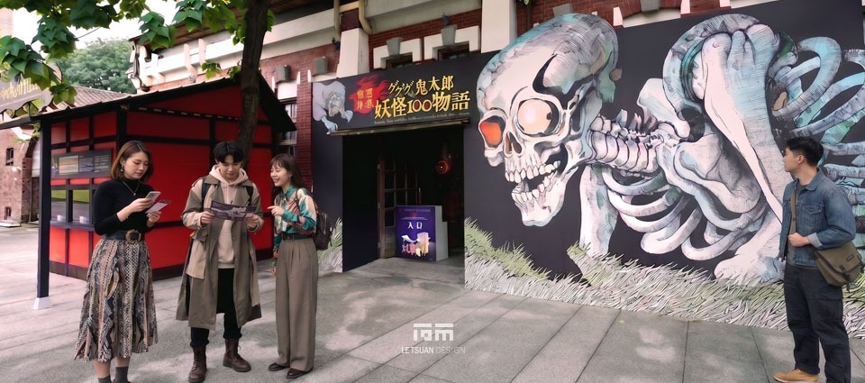
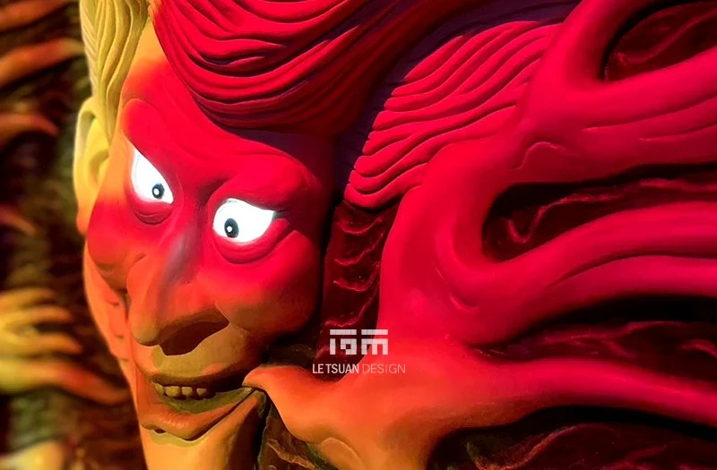
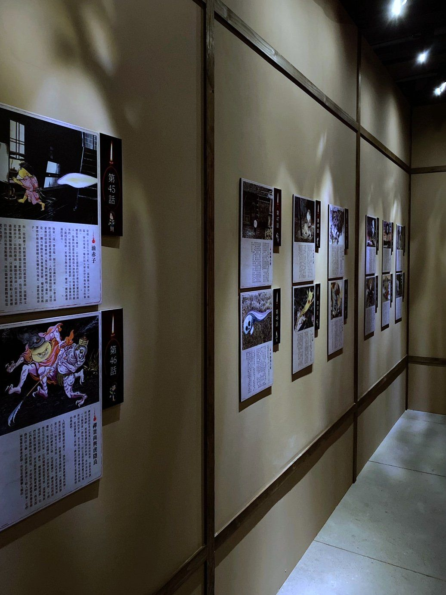
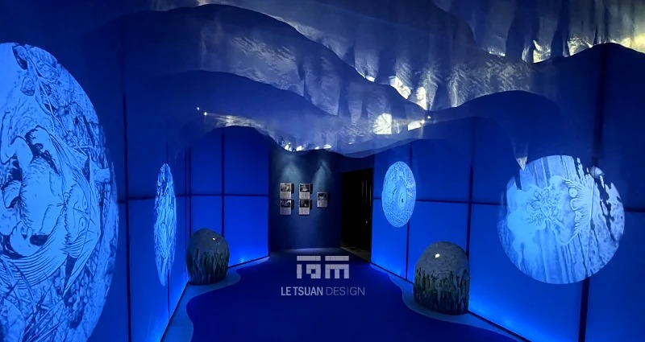
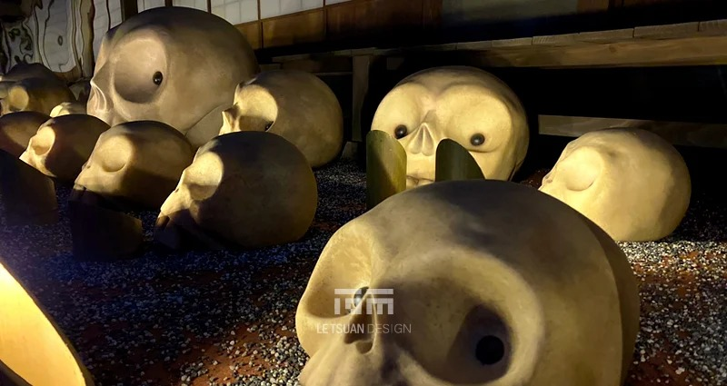
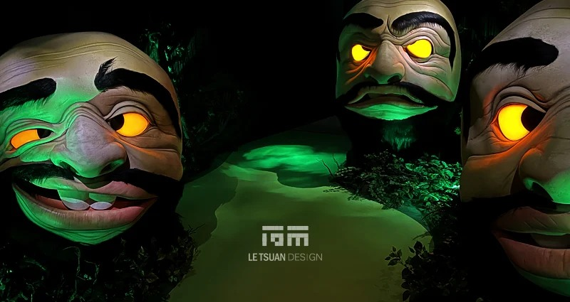
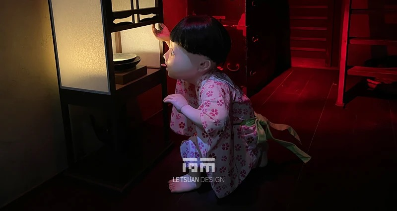
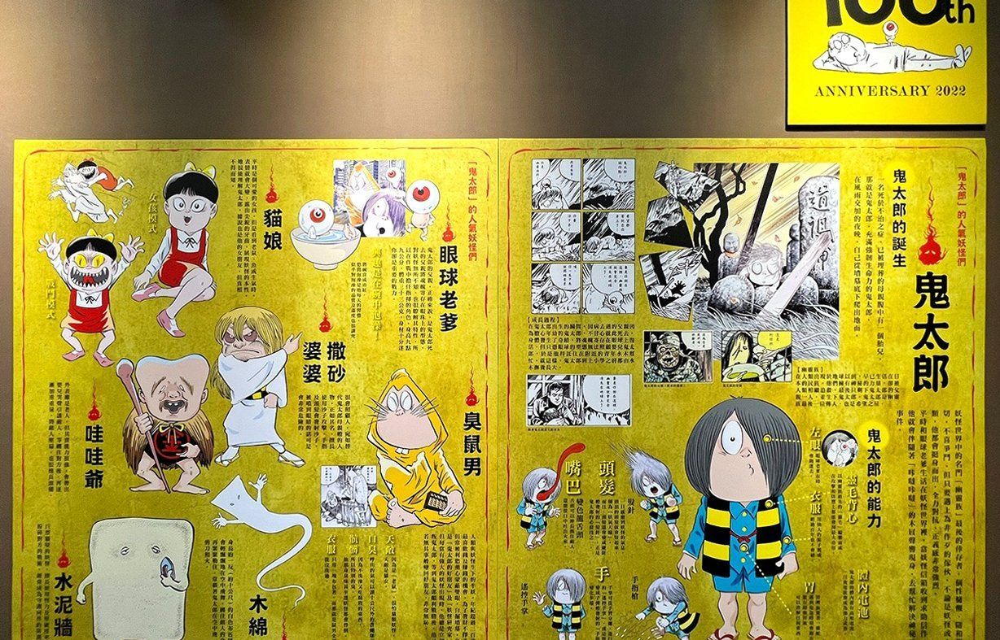
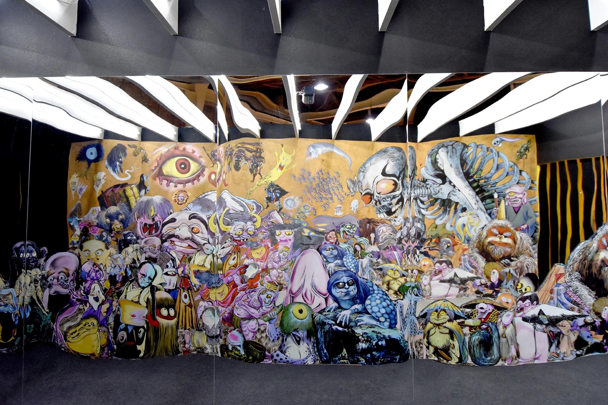
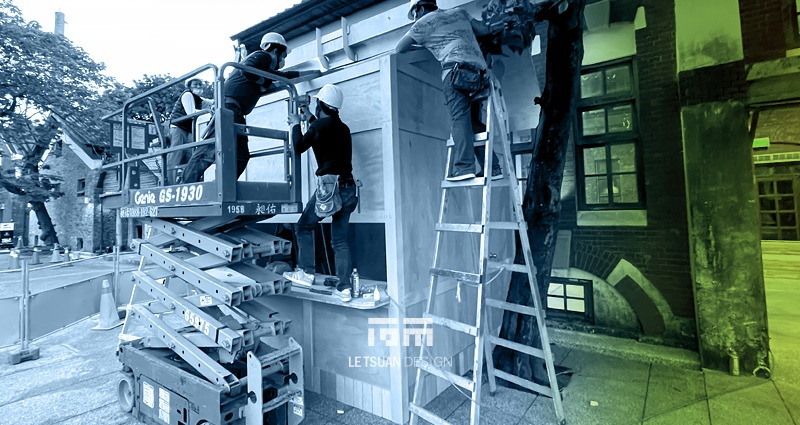